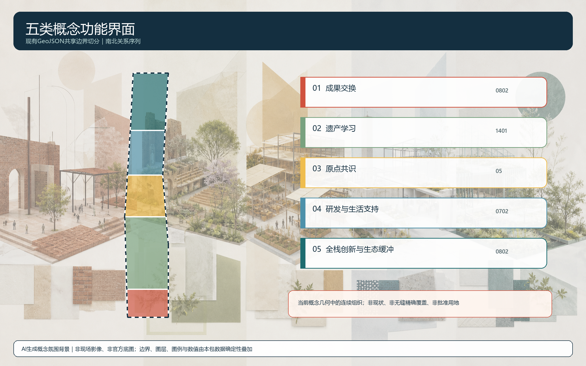
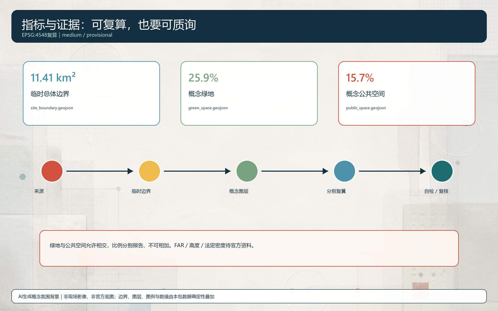

统筹研究、总体设计、重点深化构成传导系统。
本页面是离线概念展示。临时粗略边界只用于可视化、入口自检与设计讨论；不代表官方红线、审批依据或精确面积结论。
总览地图

众智园全栈锻造；AI原点共识；大钟寺成果交换。
10张场景卡、3项有限测试方向、5类用户画像均保留人工复核与退出机制。
用地分区

交通慢行与蓝绿公共空间

建筑与更新项目
六个概念建筑基底不等同于现状调查、产权判断、拆除决定或新建许可。
公共接口与低干预示范、原点社区共识网络、全栈创新与生态缓冲深化。
核心指标
11.41 km²
25.9%
15.7%
指标口径：绿地与公共空间是允许相交的概念图层，25.9%和15.7%按同一临时边界分别报告，不能相加为总公共生态面积、总开放空间比例或法定指标。

任务覆盖
公告17项任务与agent.1至agent.6均在compliance_matrix.json中逐条映射至正文、图层、指标、图纸、HTML、来源、假设与自检。
自检状态
本地完整性检查已完成；仓库CI和专业评审仍需在PR中复核。
正式边界、控制指标、现状、权属和工程资料到位后，全部空间与指标都必须重算。
来源
- DATA-SRC-OFFICIAL-ANNOUNCEMENT-20260509
- DATA-SRC-AGENT-TASKBOOK-20260518
- DATA-SRC-PROVISIONAL-BOUNDARIES-20260605
- DATA-SRC-MOHURD-URBAN-DESIGN-MEASURES
假设与资料缺口
A-PROV-BOUNDARY-001、A-CONTROLS-001、A-EXISTING-001、A-GOVERNANCE-001和A-IMPLEMENTATION-001记录在assumptions.json；全部空间和运营表达均为概念建议。
Offline static page. No CDN, remote font, map tile, script, iframe, form, API, or tracking code.